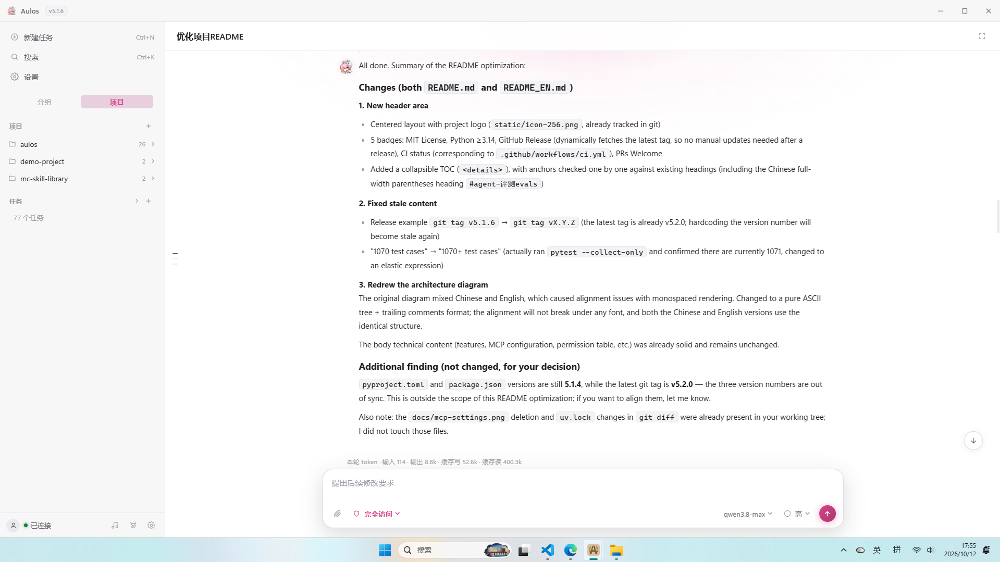
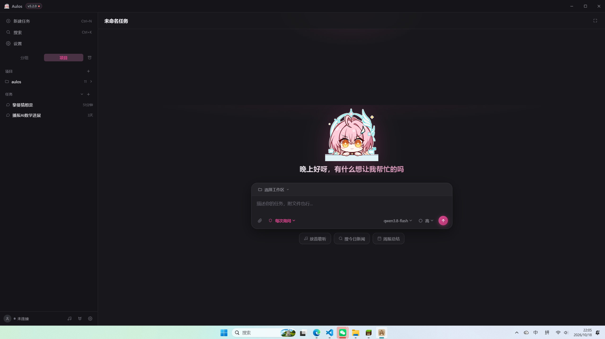

把任务说清楚，
剩下的交给 Aulos
Aulos 是一个运行在本地的编程 Agent：读代码、改代码、跑测试，直到全部通过。数据不出机器。基于 MiniCC 构建，全部源码开放审查。
uv run python main.py
# uv run pytest -q
tests/test_billing.py ...... [ 12/1070 ]
tests/test_invoice.py ...... [ 18/1070 ]
1070 passed in 38.2s✻ 完成
项目简介
Aulos 基于 MiniCC 构建。MiniCC 用尽量少的代码复刻了 Claude Code 的核心设计，Aulos 在它的骨架上补齐了上下文压缩、多 Agent 和 MCP。全部源码开放，想知道它怎么工作，读代码就行。
基于 MiniCC
MiniCC 把 Claude Code 的核心设计整理成一个小而清晰的骨架，Aulos 不另起炉灶，直接在上面做扩展——每个功能加了什么、为什么这么加，都有据可查。
代码是写给人看的
模块划分清楚，注释解释的是「为什么这么做」，而不是复述代码。想了解工作原理，从 aulos/runtime.py 的主循环读起就行——整个 Agent 都围着它转。
欢迎参与贡献
发现 Bug 欢迎报 issue，最好带上复现步骤。想提 PR 的话：跑通全量测试，说清楚改动动机，风格跟着现有代码走。
干活的工具，不是玩具
衡量标准只有一个：任务是否完成。以下机制都为此存在。
工具循环
模型自主选择工具——读文件、改代码、执行命令——结果回填继续推理，直至任务结束。全程流式，决策过程可审计。
三层上下文压缩
MicroCompact、Session Memory、Full Compact 三级降级，长会话不超窗口。摘要锚定原文抑制漂移，链路带熔断。
多 Agent 并行
主 Agent 拆解任务，子 Agent 并行执行。规划用强模型，执行用便宜模型。token 开销与决策质量分开考虑。
MCP
stdio / http / sse 三种传输，兼容 Claude Code 的 SKILL.md 与配置格式。外部工具与内置工具走同一套审批，没有特权路径。
三级权限
plan 只读、工作区可写、完全放开，三档明确，越权即审批。.git 与 ~/.ssh 等路径无条件要求人工确认——没有例外，没有开关。
桌面端
Tauri 2 外壳：设置、多供应商、任务卡片。附带桌宠与电台，不影响核心功能，不喜欢可以无视。
模块划分
CLI 与桌面端共用同一内核。划分如下：
>CLI (main.py) # 终端交互 / 免交互模式
Desktop shell (src-tauri) # 桌面壳, 走 WebSocket / REST
|
+-> aulos/server.py # FastAPI 后端门面
| +-> aulos/web/ # 各功能域的 REST 接口
| +-> aulos/radio/ # 电台曲库(网易云 / B站)
|
+-> aulos/runtime.py # Agent 主循环(核心)
+-> api_client / tools # 模型调用客户端 / 内置工具
+-> permissions / compact # 权限审批 / 三层压缩
+-> multi_agent / skills # 子 Agent / 技能包
+-> memory / mcp_client # 跨会话记忆 / MCP 接入
+-> config / storage # 配置合并 / 会话存储
# 数据目录: ~/.aulos/
界面
深浅双主题，石墨锌配色。本页样式直接取自桌面端。


安装
桌面安装包，或从源码运行。
git clone uv sync 后直接运行，源码可审
打 tag 触发三平台构建 · Windows 依赖 Git for Windows（执行层使用 Git Bash）